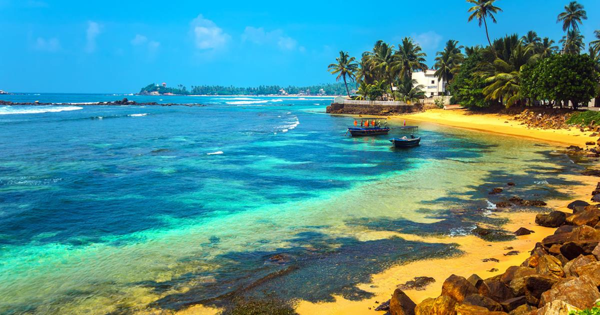

Listed below are a few popular options among tourists, that each offer unique and exciting adventures which will most definitely leave you wanting more.
Sri Lankan Safari Parks

The stunning Sri Lankan leopard can be sighted in both the Yala and Wilpattu national parks. Further Sri Lanka has multiple safari parks across the island which are beautifully maintained and filled with multiple species of animals.
Visiting Sri Lanka will be perfect for any wildlife enthusiast, as the Island showcases its raw natural beauty and the safari parks show the untamed side of Sri Lanka which truly offers tourists an thrilling and a once in a life time experience.
Click here to read more
Sri Lankan Wildlife
Another wonderful possibility in Sri Lanka is to go whale watching just a few Km's away from the shore. These beautiful mammals often grace visitors with their presence in the mornings. Sri Lanka is an Island teeming with life and prosperity.
Therefore it is a common sight to see many beautiful animals simply roaming around the country. Such as Elephants along the side of the road, monkeys swinging from tree to tree or even exotic birds showing off their feathers.
Click here to read more
Sri Lankan Beaches

Sri Lanka's beaches are known for the breath-taking views and stunning scenery. Almost as if it is cut off from the rest of the world, many people will enjoy a few days in Sri Lankas golden mesmerizing beaches as their troubles slowly wash away with each passing wave.
Click here to read more
Help Sri Lanka
Sri Lanka is a humble Island filled with hard working locals. As majority of the country's foreign income comes through tourism, many people of all classes depend on tourists to make a living. However due to COVID-19 tourism has dropped drastically.
Help Sri Lanka by visiting the exotic Island and simply having a good time, furthermore the nation will be very grateful for any donations made.
Click here to make your donation